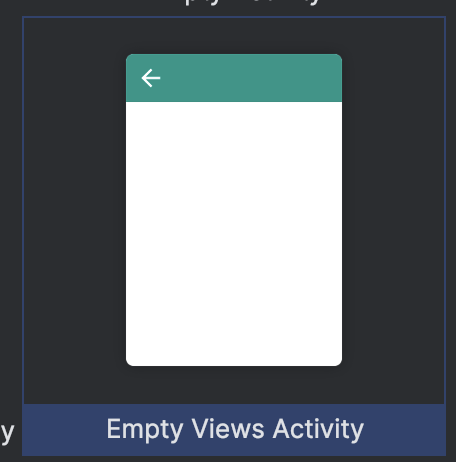
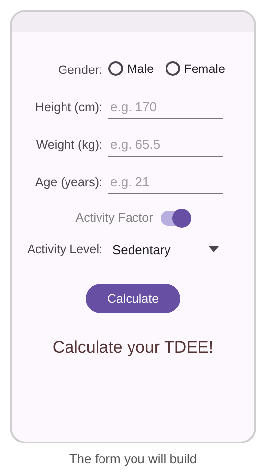
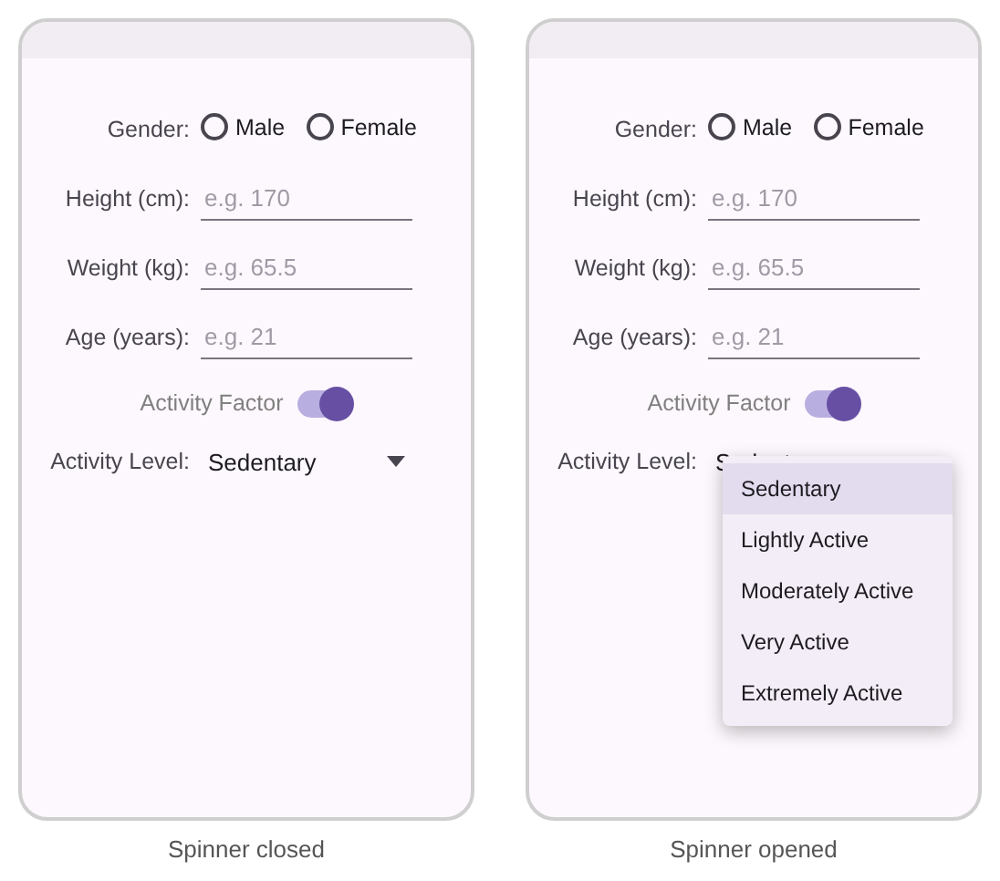
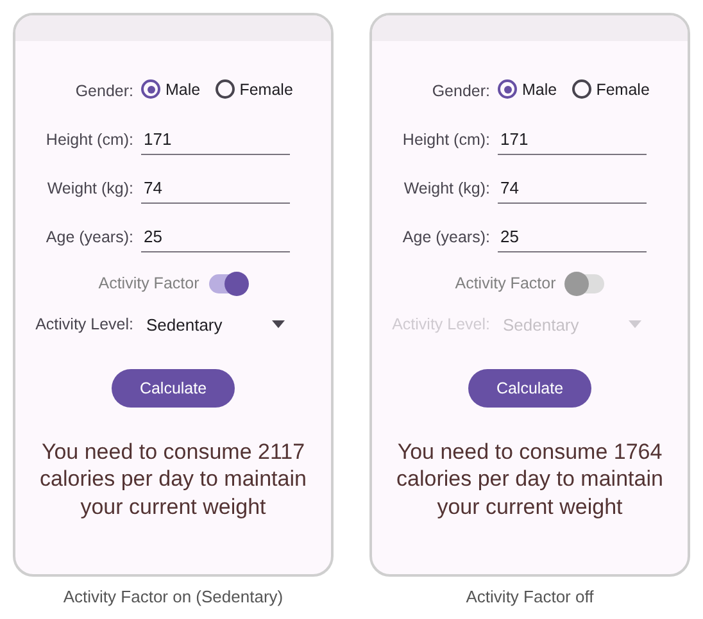
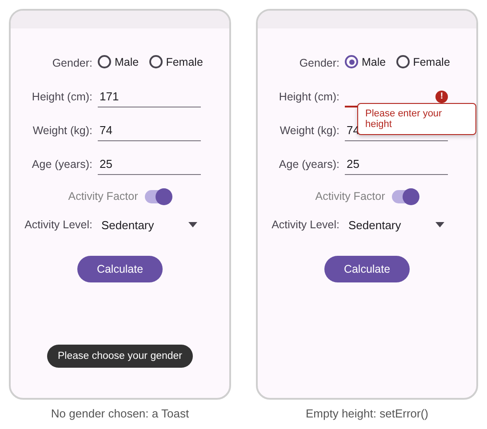
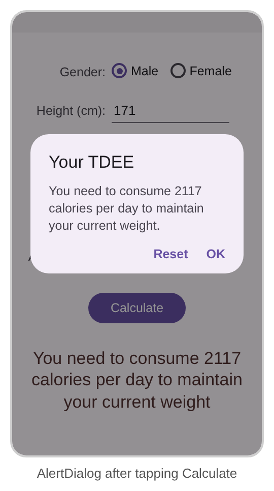
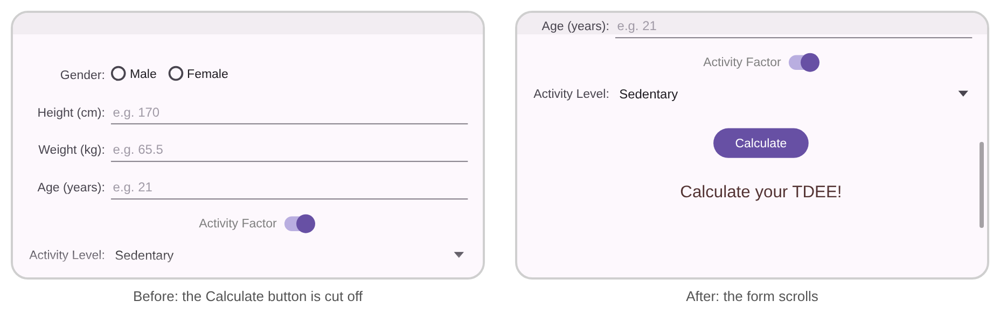
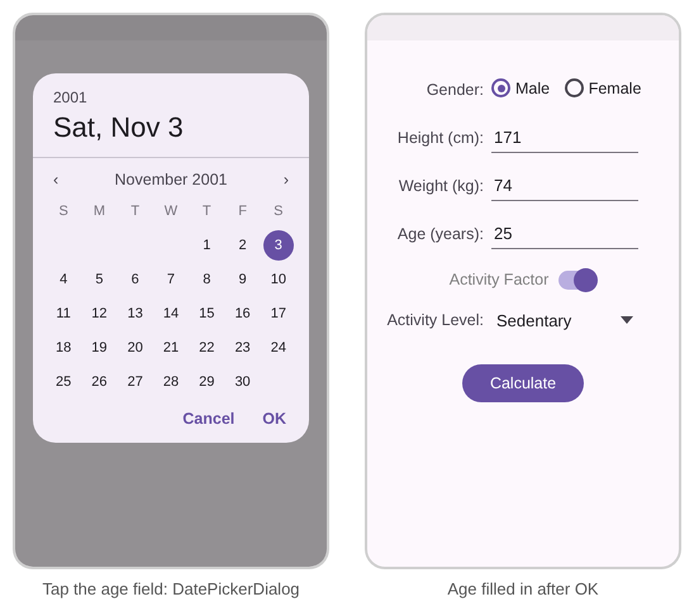
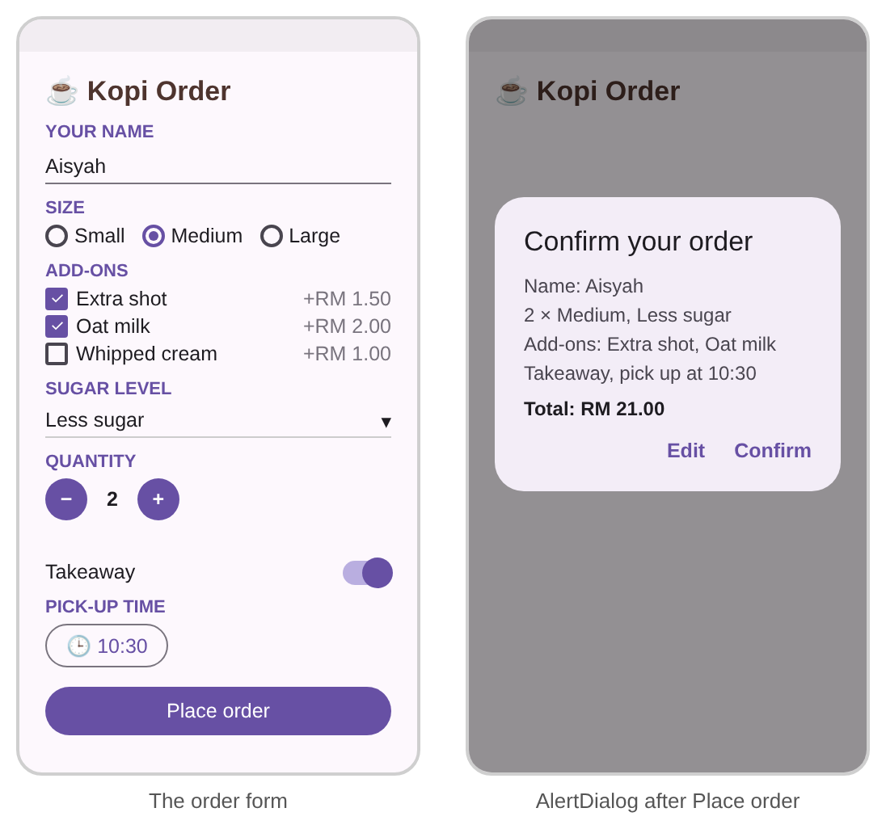

Introduction
Lab Activity 5 · Week 6 · CSC557 Mobile Programming
Objectives
- Using input controls:
EditText,RadioButton,Switch,SpinnerandCheckBox - Reading values from input controls and responding to taps with
android:onClickand listeners - Validating input and guiding the user with focus
- Showing a result in an
AlertDialog - Scrolling a long form with
ScrollView - Picking a date with a
DatePickerDialogin aDialogFragment
Duration: 2 hours. You need: Android Studio and an emulator or Android phone.
| Part | What you do | Time | Marks |
|---|---|---|---|
| Activity 1: Designing the form | Build the TDEE form with a GridLayout | 25 min | – |
| Activity 2: Reading input values | React to the Switch and calculate the TDEE | 25 min | – |
| Activity 3: Validating input | Stop the crash on empty fields and move the focus | 20 min | – |
| Activity 4: AlertDialog | Show the result in a dialog with OK and Reset | 20 min | – |
| Activity 5: ScrollView | Make the form scroll in landscape | 10 min | – |
| Activity 6: Date picker | Pick a birth date to fill in the age | 20 min | – |
| Post-Lab (after the lab) | Build the Kopi Order app on your own | – | 10 |
| Total | 120 min | 10 |
The questions in the activities are for class discussion and are not marked. Only the Post-Lab is marked (10 marks).
In this lab you build an Android app that uses several input controls to calculate a person’s TDEE. TDEE stands for Total Daily Energy Expenditure: the total number of calories you burn each day. Four key factors determine your TDEE:
- Basal Metabolic Rate (BMR)
- Thermic Effect of Food
- Non-Exercise Activity Thermogenesis
- Thermic Effect of Activity (exercise)
Our app estimates the BMR from gender, height, weight and age, and then multiplies it by an activity factor. You build the app step by step in one project, so keep the same project open for all six activities.
Activity 1 – Designing the form
- Create a new Android project named
TDEECalculatorusing the Java language. Choose Empty Views Activity as the template.
- We start by designing the form. The user gives the calculator the following information, each with a suitable input control:
Information Input control Gender RadioButton(two of them inside aRadioGroup)Height (cm), Weight (kg), Age (years) EditTextwith a numberinputTypeConsider activity factors (on/off) SwitchActivity level (choose from a list) Spinner
- Open res/layout/activity_main.xml in Code view and replace its content with a GridLayout of 8 rows and 2 columns. Column 0 holds the labels and column 1 holds the input controls.
res/layout/activity_main.xml
<?xml version="1.0" encoding="utf-8"?><GridLayout xmlns:android="http://schemas.android.com/apk/res/android" xmlns:tools="http://schemas.android.com/tools" android:id="@+id/main" android:layout_width="match_parent" android:layout_height="match_parent" android:columnCount="2" android:rowCount="8" tools:context=".MainActivity"> <!-- the rows of the form go here --></GridLayout>Keep
android:id="@+id/main"on the root. The template’s MainActivity usesR.id.mainto add padding for the status bar. - Add the first row for the Gender input. The two radio buttons are grouped in a RadioGroup, so the user can choose only one of them. Checking one radio button unchecks the other.
res/layout/activity_main.xml (inside the GridLayout)
<!-- Row 0: Gender --> <TextView android:id="@+id/tvGender" android:layout_width="wrap_content" android:layout_height="wrap_content" android:layout_row="0" android:layout_column="0" android:layout_gravity="end|center_vertical" android:layout_marginStart="50dp" android:layout_marginTop="48dp" android:text="Gender:" android:textSize="18sp" /> <RadioGroup android:id="@+id/rgGender" android:layout_width="wrap_content" android:layout_height="wrap_content" android:layout_row="0" android:layout_column="1" android:layout_gravity="start" android:layout_marginTop="48dp" android:orientation="horizontal"> <RadioButton android:id="@+id/rbMale" android:layout_width="wrap_content" android:layout_height="wrap_content" android:text="Male" /> <RadioButton android:id="@+id/rbFemale" android:layout_width="wrap_content" android:layout_height="wrap_content" android:layout_marginStart="20dp" android:text="Female" /> </RadioGroup> - Add the second, third and fourth rows for the Height, Weight and Age inputs. The
inputTypedecides which keyboard appears:numbershows digits only andnumberDecimalalso allows a decimal point. Thehintis grey text that disappears when the user types.res/layout/activity_main.xml (inside the GridLayout, after the RadioGroup)<!-- Row 1: Height --> <TextView android:layout_width="wrap_content" android:layout_height="wrap_content" android:layout_row="1" android:layout_column="0" android:layout_gravity="end|center_vertical" android:text="Height (cm):" android:textSize="18sp" /> <EditText android:id="@+id/etHeight" android:layout_width="wrap_content" android:layout_height="wrap_content" android:layout_row="1" android:layout_column="1" android:layout_columnWeight="1" android:layout_marginEnd="50dp" android:hint="e.g. 170" android:inputType="number" /> <!-- Row 2: Weight --> <TextView android:layout_width="wrap_content" android:layout_height="wrap_content" android:layout_row="2" android:layout_column="0" android:layout_gravity="end|center_vertical" android:text="Weight (kg):" android:textSize="18sp" /> <EditText android:id="@+id/etWeight" android:layout_width="wrap_content" android:layout_height="wrap_content" android:layout_row="2" android:layout_column="1" android:layout_columnWeight="1" android:layout_marginEnd="50dp" android:hint="e.g. 65.5" android:inputType="numberDecimal" /> <!-- Row 3: Age --> <TextView android:layout_width="wrap_content" android:layout_height="wrap_content" android:layout_row="3" android:layout_column="0" android:layout_gravity="end|center_vertical" android:text="Age (years):" android:textSize="18sp" /> <EditText android:id="@+id/etAge" android:layout_width="wrap_content" android:layout_height="wrap_content" android:layout_row="3" android:layout_column="1" android:layout_columnWeight="1" android:layout_marginEnd="50dp" android:hint="e.g. 21" android:inputType="number" />layout_columnWeight="1"lets column 1 take the free width, so the EditText fields stretch to the right margin. - For the fifth input, the user can switch on or off whether to include activity factors in the TDEE. We use a Switch for this. In Activity 2, toggling it will enable or disable the activity level list. The Switch spans both columns (
layout_columnSpan="2").res/layout/activity_main.xml (inside the GridLayout)<!-- Row 4: Consider Activity Factor switch --> <Switch android:id="@+id/swActivityFactor" android:layout_width="wrap_content" android:layout_height="wrap_content" android:layout_row="4" android:layout_column="0" android:layout_columnSpan="2" android:layout_gravity="center" android:checked="true" android:text="Activity Factor" android:textColor="#808080" android:textSize="18sp" /> - For the last input, the user chooses an activity level from a list. We use a Spinner: it shows the selected item and opens a drop-down list when tapped.
res/layout/activity_main.xml (inside the GridLayout)
<!-- Row 5: Activity Level --> <TextView android:layout_width="wrap_content" android:layout_height="wrap_content" android:layout_row="5" android:layout_column="0" android:layout_gravity="end|center_vertical" android:text="Activity Level:" android:textSize="18sp" /> <Spinner android:id="@+id/spActivityLevel" android:layout_width="wrap_content" android:layout_height="wrap_content" android:layout_row="5" android:layout_column="1" android:layout_columnWeight="1" android:layout_gravity="center_horizontal" android:layout_marginEnd="50dp" /> - There are two ways to put items in a Spinner. The first is to point the Spinner to an array resource with the
android:entries="@array/name"attribute. It is simple, but we cannot change how each item looks (font size, colour, and so on). The second way is to give the Spinner an adapter in the Activity class, which we will learn in the ListView topic. In this lab we use the first way. - Open res/values/strings.xml and add the array of activity levels inside
<resources>:res/values/strings.xml<resources> <string name="app_name">TDEECalculator</string> <string-array name="activity_levels"> <item>Sedentary</item> <item>Lightly Active</item> <item>Moderately Active</item> <item>Very Active</item> <item>Extremely Active</item> </string-array></resources> - Go back to activity_main.xml and set the Spinner entries to the
activity_levelsarray:res/layout/activity_main.xml<Spinner android:id="@+id/spActivityLevel" ... the other attributes stay ... android:entries="@array/activity_levels" /> - Run the app. Tap the Spinner and check that it lists the five activity levels.

- Add a Calculate button in row 6. It spans both columns and sits in the centre.
res/layout/activity_main.xml (inside the GridLayout)
<!-- Row 6: Calculate button --> <Button android:id="@+id/btnCalculate" android:layout_width="wrap_content" android:layout_height="wrap_content" android:layout_row="6" android:layout_column="0" android:layout_columnSpan="2" android:layout_gravity="center_horizontal" android:layout_marginTop="50dp" android:text="Calculate" /> - Lastly, add a TextView in row 7 to display the result of the calculation.
res/layout/activity_main.xml (inside the GridLayout)
<!-- Row 7: TextView for displaying the result --> <TextView android:id="@+id/tvResult" android:layout_width="wrap_content" android:layout_height="wrap_content" android:layout_row="7" android:layout_column="0" android:layout_columnSpan="2" android:layout_rowWeight="1" android:layout_gravity="center" android:layout_marginStart="10dp" android:layout_marginEnd="10dp" android:layout_marginBottom="100dp" android:text="Calculate your TDEE!" android:textColor="#533333" android:textSize="30sp" /> - Run your app. It should look like the picture in step 2. Tapping Calculate does nothing yet: we add the code in Activity 2.
Activity 2 – Reading input values
The form is ready. Now we write the Java code that reacts to the user and calculates the TDEE. When the user taps Calculate, the app uses these formulas:
- Men BMR = 66 + (13.7 × weight in kg) + (5 × height in cm) − (6.8 × age in years)
- Women BMR = 655 + (9.6 × weight in kg) + (1.8 × height in cm) − (4.7 × age in years)
If the Activity Factor switch is on, the BMR is multiplied by the factor of the level selected in the Spinner:
| # | Activity level | Meaning | Factor |
|---|---|---|---|
| 0 | Sedentary | little or no exercise, desk job | 1.2 |
| 1 | Lightly Active | light exercise 1–3 days per week | 1.375 |
| 2 | Moderately Active | moderate exercise 3–5 days per week | 1.55 |
| 3 | Very Active | heavy exercise 6–7 days per week | 1.725 |
| 4 | Extremely Active | very heavy exercise, hard labour job, training 2× per day | 1.9 |
The # column is the position of the item in the Spinner. Positions start at 0.
- Open MainActivity.java. Declare the input controls as fields, get them with
findViewById()at the end ofonCreate(), and add a listener to the Switch that enables or disables the Spinner. Do not change the code the template generated.java/com/example/tdeecalculator/MainActivity.javapackage com.example.tdeecalculator;import android.os.Bundle;import android.view.View;import android.widget.CompoundButton;import android.widget.EditText;import android.widget.RadioButton;import android.widget.Spinner;import android.widget.Switch;import android.widget.TextView;// ... the androidx imports from the template stay ...public class MainActivity extends AppCompatActivity { // the views we use in this class private RadioButton rbMale; private EditText etHeight, etWeight, etAge; private Switch swActivityFactor; private Spinner spActivityLevel; private TextView tvResult; @Override protected void onCreate(Bundle savedInstanceState) { super.onCreate(savedInstanceState); EdgeToEdge.enable(this); setContentView(R.layout.activity_main); // ... the ViewCompat.setOnApplyWindowInsetsListener(...) code stays ... // get references to the UI elements in the layout rbMale = findViewById(R.id.rbMale); etHeight = findViewById(R.id.etHeight); etWeight = findViewById(R.id.etWeight); etAge = findViewById(R.id.etAge); swActivityFactor = findViewById(R.id.swActivityFactor); spActivityLevel = findViewById(R.id.spActivityLevel); tvResult = findViewById(R.id.tvResult); // listen to switch value change (toggle on / off) swActivityFactor.setOnCheckedChangeListener(new CompoundButton.OnCheckedChangeListener() { @Override public void onCheckedChanged(CompoundButton buttonView, boolean isChecked) { // if toggled on, enable, otherwise disable the activity level spinner if (isChecked) { spActivityLevel.setEnabled(true); // enable spinner spActivityLevel.setAlpha(1f); // reset transparency } else { spActivityLevel.setEnabled(false); // disable spinner spActivityLevel.setAlpha(0.2f); // make the spinner look disabled } } }); }}Yellow lines are the ones you add. Grey italic lines stand for code that is already there.
- Run the app and test the switch. Turning it off should grey out the Activity Level Spinner so it cannot be opened. Turning it on enables it again.
- Open activity_main.xml and add the
android:onClickattribute to the Calculate button. When the user taps the button, Android calls the method with this name in MainActivity.res/layout/activity_main.xml<Button android:id="@+id/btnCalculate" ... the other attributes stay ... android:onClick="calculateTDEE" android:text="Calculate" /> - The
calculateTDEE()method reads every input control, calculates the BMR, applies the activity factor and shows the result.java/com/example/tdeecalculator/MainActivity.java (inside the class)/** Called when the user taps the Calculate button (android:onClick) */ public void calculateTDEE(View view) { // read gender: isChecked() is true for the radio button the user chose String gender; if (rbMale.isChecked()) gender = "Male"; else gender = "Female"; // read height, weight and age: convert the text to a number int height = Integer.parseInt(etHeight.getText().toString()); double weight = Double.parseDouble(etWeight.getText().toString()); int age = Integer.parseInt(etAge.getText().toString()); // calculate BMR double BMR; if (gender.equals("Male")) BMR = 66 + (13.7 * weight) + (5 * height) - (6.8 * age); else BMR = 655 + (9.6 * weight) + (1.8 * height) - (4.7 * age); // check Activity Factor double TDEE = BMR; if (swActivityFactor.isChecked()) { // read spinner: the position of the selected item, starting at 0 int selectedIdx = spActivityLevel.getSelectedItemPosition(); double factor = 1; switch (selectedIdx) { case 0: factor = 1.2; break; case 1: factor = 1.375; break; case 2: factor = 1.55; break; case 3: factor = 1.725; break; case 4: factor = 1.9; break; } // multiply by the factor TDEE = TDEE * factor; } // display result tvResult.setText("You need to consume " + (int) TDEE + " calories per day to maintain your current weight"); } - Run your app. Choose Male, enter height 171, weight 74, age 25 and keep Sedentary. Tap Calculate: the result should be 2117 calories. Then switch Activity Factor off and tap Calculate again: the result is the BMR alone, 1764 calories.

Activity 3 – Validating input and guiding focus
Users make mistakes. A good form tells the user what is wrong and moves the cursor (the focus) to the field that needs fixing, instead of crashing.
- Run the app, choose a gender, leave Height empty and tap Calculate. The app stops. Open Logcat, type
level:errorin the filter box and find the red FATAL EXCEPTION lines. Read the exception name and the line ofMainActivity.javait points to. - Open MainActivity.java. Add a field for the RadioGroup, get it in
onCreate(), and add two helper methods:isEmpty()checks one EditText, andvalidateInputs()checks the whole form.java/com/example/tdeecalculator/MainActivity.javaimport android.widget.RadioGroup;import android.widget.Toast;// ... the other imports stay ...public class MainActivity extends AppCompatActivity { // ... the other fields stay ... private RadioGroup rgGender; @Override protected void onCreate(Bundle savedInstanceState) { // ... the code from Activity 2 stays ... rgGender = findViewById(R.id.rgGender); } /** Shows an error on the EditText and returns true when it is empty */ private boolean isEmpty(EditText editText, String message) { if (editText.getText().toString().trim().isEmpty()) { editText.setError(message); // red (!) icon with the message editText.requestFocus(); // move the cursor to this field return true; } return false; } /** Returns true when every input has a value */ private boolean validateInputs() { // getCheckedRadioButtonId() is -1 when no radio button is checked if (rgGender.getCheckedRadioButtonId() == -1) { Toast.makeText(this, "Please choose your gender", Toast.LENGTH_SHORT).show(); return false; } if (isEmpty(etHeight, "Please enter your height")) return false; if (isEmpty(etWeight, "Please enter your weight")) return false; if (isEmpty(etAge, "Please enter your age")) return false; return true; } // ... calculateTDEE() stays below ... - Call
validateInputs()at the start ofcalculateTDEE(). If a value is missing, the method stops withreturnbefore any number is converted.java/com/example/tdeecalculator/MainActivity.javapublic void calculateTDEE(View view) { // stop here if an input is missing: the user sees an error instead of a crash if (!validateInputs()) { return; } // read gender: isChecked() is true for the radio button the user chose // ... the rest of the method stays ... - Run the app and test it: tap Calculate with no gender chosen, then with an empty height, weight or age. Each time you should see a message, and the cursor should jump to the empty field.

- Now look at how focus moves. Tap Height and type a number. On the keyboard, tap the Next key (the arrow at the bottom right). The focus moves to Weight, then to Age. Android moves the focus from top to bottom and left to right, following the layout.
Question 1: Checking the range
a. Which exception did you see in Logcat in step 1, and which line of calculateTDEE() threw it?
b. An empty field is not the only mistake. Extend validateInputs() so the values must also be in these ranges. Show the error with setError() on the wrong field and move the focus to it.
- Height: 100 to 250 cm
- Weight: 30 to 300 kg
- Age: 10 to 100 years
Example message: “Height must be between 100 and 250 cm”.
Activity 4 – Showing the result in an AlertDialog
A dialog appears on top of the Activity and waits for the user to tap a button. An AlertDialog has an optional title, a content area (a message) and up to three action buttons: positive, negative and neutral. We use one to show the result, with OK to close it and Reset to clear the form for the next person.
- Add two methods to MainActivity.java:
showResultDialog()builds and shows the dialog, andresetForm()clears every input.java/com/example/tdeecalculator/MainActivity.javaimport android.content.DialogInterface;import androidx.appcompat.app.AlertDialog;// ... the other imports stay ... // ... inside the class, after calculateTDEE() ... /** Shows the result in an AlertDialog with two buttons */ private void showResultDialog(String message) { AlertDialog.Builder builder = new AlertDialog.Builder(this); builder.setTitle("Your TDEE"); builder.setMessage(message); // positive button: null listener means the button just closes the dialog builder.setPositiveButton("OK", null); // negative button: clear the form builder.setNegativeButton("Reset", new DialogInterface.OnClickListener() { @Override public void onClick(DialogInterface dialog, int which) { resetForm(); } }); builder.show(); } /** Clears all inputs and puts the cursor back in the first field */ private void resetForm() { rgGender.clearCheck(); // no radio button checked etHeight.setText(""); etWeight.setText(""); etAge.setText(""); swActivityFactor.setChecked(true); // also enables the spinner (listener) spActivityLevel.setSelection(0); // first item: Sedentary tvResult.setText("Calculate your TDEE!"); etHeight.requestFocus(); }Use the
AlertDialogfrom androidx.appcompat.app. If Android Studio offers two imports, choose that one so the dialog matches the app theme. - At the end of
calculateTDEE(), replace the “display result” lines so the result goes into a message that is shown in the TextView and in the dialog:java/com/example/tdeecalculator/MainActivity.java (end of calculateTDEE)// display result String message = "You need to consume " + (int) TDEE + " calories per day to maintain your current weight."; tvResult.setText(message); showResultDialog(message); } - Run the app, fill in the form and tap Calculate. The dialog appears. Tap OK to close it. Calculate again and tap Reset: the form is cleared and the cursor is back in Height.

Question 2: Confirm before reset
Tapping Reset clears everything at once. Change the app so that Reset first shows a second AlertDialog with the message “Clear all fields?” and two buttons, Yes and Cancel. The form is cleared only when the user taps Yes.
Activity 5 – Scrolling the form with ScrollView
- Turn on Auto-rotate in the emulator (swipe down from the top of the screen twice and tap Auto-rotate), run the app and rotate the device to landscape. The form is taller than the screen: the Calculate button and the result are cut off, and you cannot scroll to them.
- To make the form scroll, put the GridLayout inside a ScrollView. A ScrollView can have only one direct child, so the GridLayout (with all its rows) is that child. Change the top and the bottom of activity_main.xml:
res/layout/activity_main.xml
<?xml version="1.0" encoding="utf-8"?><ScrollView xmlns:android="http://schemas.android.com/apk/res/android" xmlns:tools="http://schemas.android.com/tools" android:id="@+id/main" android:layout_width="match_parent" android:layout_height="match_parent" tools:context=".MainActivity"> <GridLayout android:layout_width="match_parent" android:layout_height="wrap_content" android:columnCount="2" android:rowCount="8"> <!-- all the rows from Activity 1 stay here, unchanged --> </GridLayout></ScrollView>The
xmlnslines,android:id="@+id/main"andtools:contextmove from the GridLayout to the ScrollView, because the ScrollView is now the root. The GridLayout height iswrap_content, so it can be taller than the screen. - Run the app in landscape again. You can now scroll down to the Calculate button.

Question 3: A CheckBox for kilojoules
Add a CheckBox with the text “Also show kilojoules” in a new row above the Calculate button (remember to update layout_row and rowCount). When it is checked, the dialog message also shows the TDEE in kilojoules (1 calorie = 4.184 kJ).
Activity 6 – Picking a birth date
Users do not always know their exact age, but they know their birth date. Android gives us ready-made pickers for dates and times. A picker is shown with a DialogFragment: a Fragment that shows a dialog window on top of the Activity. Like the Fragments in week 5, it has its own lifecycle, so it survives screen rotation.
- Create the Fragment class: right-click your package (under java) › New › Java Class, name it
DatePickerFragment, and replace its content with the code below (keep your own package line).java/com/example/tdeecalculator/DatePickerFragment.javapackage com.example.tdeecalculator;import android.app.DatePickerDialog;import android.app.Dialog;import android.os.Bundle;import android.widget.DatePicker;import androidx.annotation.NonNull;import androidx.annotation.Nullable;import androidx.fragment.app.DialogFragment;import java.util.Calendar;public class DatePickerFragment extends DialogFragment implements DatePickerDialog.OnDateSetListener { // creates the dialog: here a DatePickerDialog that starts 20 years ago @NonNull @Override public Dialog onCreateDialog(@Nullable Bundle savedInstanceState) { Calendar c = Calendar.getInstance(); int year = c.get(Calendar.YEAR) - 20; int month = c.get(Calendar.MONTH); int day = c.get(Calendar.DAY_OF_MONTH); return new DatePickerDialog(requireContext(), this, year, month, day); } // called when the user taps OK: send the date to MainActivity @Override public void onDateSet(DatePicker view, int year, int month, int day) { MainActivity activity = (MainActivity) requireActivity(); activity.processDatePickerResult(year, month, day); }}processDatePickerResult()is red for now. We add it to MainActivity in step 3. - Open activity_main.xml and change the Age EditText so a tap opens the picker instead of the keyboard. Replace the old hint with the new one:
res/layout/activity_main.xml
<EditText android:id="@+id/etAge" ... the other attributes stay ... android:focusable="false" android:hint="Tap to pick birth date" android:onClick="showDatePicker" />focusable="false"means the field cannot get the focus, so no keyboard appears. It is still clickable, so the tap callsshowDatePicker(). - Add the two methods to MainActivity.java.
showDatePicker()shows the Fragment, andprocessDatePickerResult()turns the chosen date into an age and writes it into the Age field.java/com/example/tdeecalculator/MainActivity.java (inside the class)import androidx.fragment.app.DialogFragment;import java.util.Calendar;// ... the other imports stay ... /** Called when the user taps the Age field (android:onClick) */ public void showDatePicker(View view) { DialogFragment newFragment = new DatePickerFragment(); newFragment.show(getSupportFragmentManager(), "datePicker"); } /** Called by DatePickerFragment with the date the user chose */ public void processDatePickerResult(int year, int month, int day) { Calendar today = Calendar.getInstance(); int age = today.get(Calendar.YEAR) - year; // no birthday yet this year? then the person is one year younger if (today.get(Calendar.MONTH) < month || (today.get(Calendar.MONTH) == month && today.get(Calendar.DAY_OF_MONTH) < day)) { age--; } etAge.setText(String.valueOf(age)); etAge.setError(null); // remove an old "Please enter your age" error } - Run the app and tap the Age field. Choose a birth date and tap OK: the age appears in the field. Calculate the TDEE again to check that everything still works.

Question 4: Better date picking
a. A birth date cannot be in the future. In onCreateDialog(), stop the user from choosing a date after today. Hint: keep the dialog in a variable and use dialog.getDatePicker().setMaxDate(...) with System.currentTimeMillis().
b. After the user picks a date, show it in a Toast in the format day/month/year, for example “Born on 3/11/2001”. Remember that the month from the picker starts at 0 for January.
Troubleshooting
| Problem | Likely cause and fix |
|---|---|
| Build error: cannot find symbol … main | The root layout lost android:id="@+id/main". In Activity 5 it must move to the ScrollView. |
| App stops when you tap Calculate | An EditText is empty, so parseInt() throws NumberFormatException. Add the checks from Activity 3. |
| App crashes on tap: Could not find method … for android:onClick | The name in android:onClick must match a public void name(View view) method in MainActivity. |
| The result always uses the women’s formula | Read the gender with isChecked(), not isSelected(). |
| The Spinner is empty | Add android:entries="@array/activity_levels" and check the array name in strings.xml. |
| Views overlap in the GridLayout | Two views use the same layout_row and layout_column. Give each row its own number and make rowCount large enough. |
| ScrollView can host only one direct child | Put all the rows inside the one GridLayout, not directly in the ScrollView. |
| The dialog looks different or the import is ambiguous | Import androidx.appcompat.app.AlertDialog. |
| Tapping Age opens the keyboard | Add android:focusable="false" to etAge. |
Post-Lab – Kopi Order app
Build a small coffee-shop ordering app on your own, in a new project named KopiOrder (Empty Views Activity, Java). It uses the same input controls as this lab, so you can look back at Activities 1–6 when you are stuck. Submit it before next week’s lab.

Requirements
- Layout: a vertical
LinearLayoutas the root. Keepandroid:id="@+id/main"on it. - Name: an
EditTextwithinputType="textPersonName". - Size: three
RadioButtons in aRadioGroup: Small RM 5.00, Medium RM 6.50, Large RM 8.00. - Add-ons: three
CheckBoxes: Extra shot +RM 1.50, Oat milk +RM 2.00, Whipped cream +RM 1.00. The user can tick any number of them. - Sugar level: a
Spinnerwith No sugar, Less sugar, Normal and Extra sweet, from astring-arrayin strings.xml. - Quantity: a TextView that starts at 1, with a − and a + button (
android:onClick). The quantity stays between 1 and 10; show a Toast when the user tries to go past a limit. - Takeaway: a
Switch. Takeaway adds RM 0.50 per cup for packaging. - Pick-up time: a button that opens a
TimePickerDialogand then shows the chosen time on the button, for example 10:30. - Place order: if the name is empty, use
setError()andrequestFocus(); if no size is chosen, show a Toast. Otherwise show anAlertDialogwith the order summary and total, as in the picture. Confirm shows the Toast “Thank you, <name>! Your kopi is being prepared.” and Edit just closes the dialog.
Price
Total = (size price + add-ons + takeaway RM 0.50) × quantity
Check your app with the order in the picture: 2 × Medium with Extra shot and Oat milk, takeaway = (6.50 + 1.50 + 2.00 + 0.50) × 2 = RM 21.00.
Marking (10 marks)
| Requirement | Marks |
|---|---|
| Layout with all the input controls | 2 |
| Quantity − and + buttons with limits | 1.5 |
| Correct total price | 2 |
| Validation of name and size | 1.5 |
| AlertDialog summary with Confirm and Edit | 2 |
| TimePickerDialog for the pick-up time | 1 |
| Total | 10 |
Submit two files: (1) one PDF with screenshots of the form, the AlertDialog and the Confirm Toast, plus your activity_main.xml and MainActivity.java code; (2) your whole project as a zip file. In Android Studio choose File › Export › Export to Zip File… and name it KopiOrder_<your student ID>.zip.